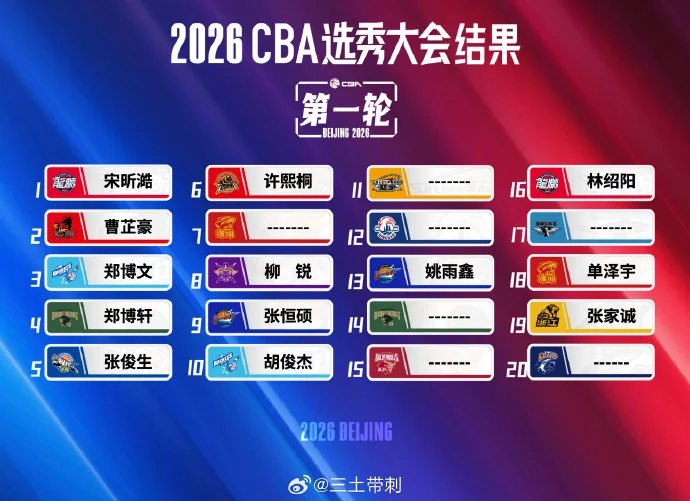
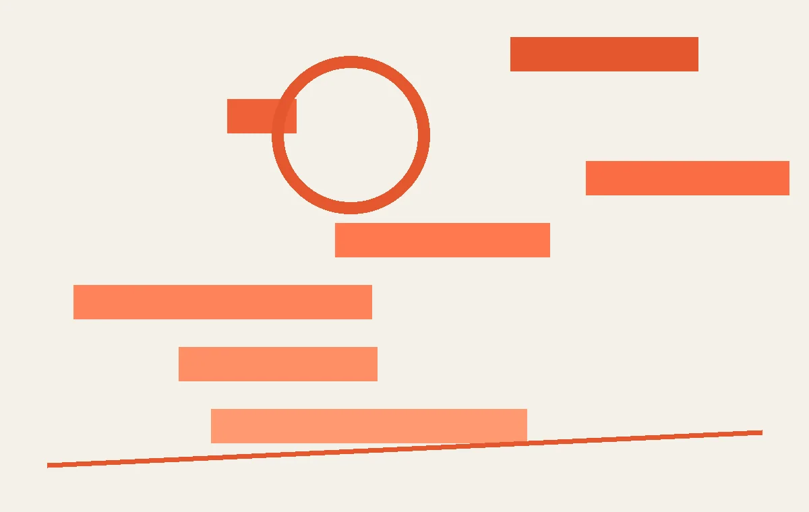
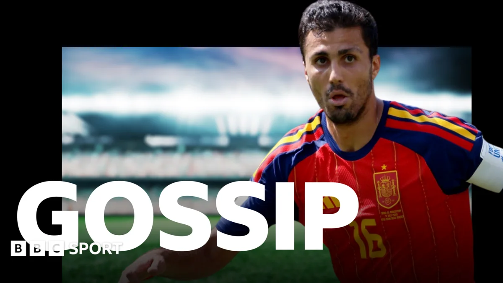
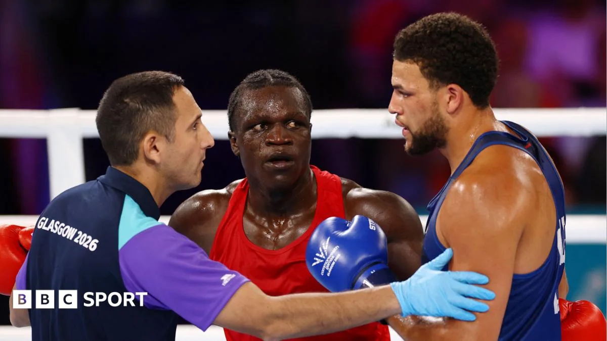

01
全民健身新五年计划：你的运动生活将这样改变
《全民健身计划（2026—2030年）》发布，新部署聚焦场地、活动和科学指导。

今天，国务院印发的《全民健身计划（相关数量—本年度）》正式公布。这是继本年度版本之后的新一轮五年规划。根据公开报道，新计划在几个方面做了升级。首先是场地设施，提出要建设更多贴近社区、方便可达的健身场所，比如体育公园、健身步道，并且推动学校体育场馆向社会开放。这意味着未来五年，你可能会发现家门口的健身设施变多了，以前只能隔着栅栏看的学校操场，也可能在特定时间向你敞开大门。其次是赛事活动，鼓励举办群众性体育赛事，比如社区运动会、线上挑战赛，降低参与门槛。过去我们总觉得比赛是专业运动员的事，但新计划希望让普通人也能轻松站上赛场，哪怕只是跑个五公里、跳个绳，都能有组织、有氛围。第三是科学健身，要加强社会体育指导员队伍建设，提供更专业的健身指导。很多朋友刚开始运动时容易受伤，或者练了半天没效果，就是因为缺乏科学指导。未来社区里可能会有更多持证上岗的指导员，帮你制定计划、纠正动作。此外，新计划还提到了智慧化健身，比如利用App记录运动数据、线上预约场馆等。对于普通大众来说，最直接的感受可能是：运动变得更方便、更便宜、更安全了。建议你关注当地体育局发布的配套实施方案，看看有哪些免费或低收费的场馆开放，以及社区里有没有新组织的健身活动。
伊恩的观察
对普通人来说，未来五年你可能会发现家门口的健身设施变多了，参与比赛的机会也更多了。建议关注当地体育局发布的配套实施方案，看看有哪些免费或低收费的场馆开放。
02
CBA状元就是第一个被选的人？但为何如今没人想当
从昔日荣耀到烫手山芋，CBA选秀状元头衔为何被参选者避之不及？

2026年CBA选秀大会刚刚落幕，一个尴尬的数字引发关注：22次弃权，创下2019年以来的最高纪录，参选人数也跌至7年最低。更讽刺的是，选秀举牌文字从直白的“弃”改成了英文“Thanks”，被球迷戏称为“皇帝的新衣”。状元签，这个本该代表最高荣誉的位置，如今却成了没人想要的烫手山芋。
要理解这个变化，得先看看CBA选秀的机制。选秀大会每年举行，球队按上赛季排名倒序获得选秀权，状元签就是第一个选人的机会。理论上，状元意味着球队最看好的新人，理应得到重点培养和高薪合同。但现实是，CBA球队更依赖自己的青训体系，选秀来的球员往往被视为“外来户”，上场时间有限，战术地位低。而且，状元秀的工资有固定标准，并不比普通顺位高多少，但外界期望却极高，一旦表现不佳，舆论压力巨大。
更深层的原因在于联赛的运营逻辑。CBA球队大多由企业投资，短期成绩压力大，教练更信任自己培养的球员，而不是选秀新人。同时，青训体系输送了大量年轻球员，选秀池里的球员质量参差不齐，状元秀的成才率并不高。过去几年，不少状元秀在CBA打不上球，甚至被下放到发展联盟，这让参选者开始权衡：当状元真的值得吗？
对普通球迷来说，这个现象其实是一面镜子。我们平时健身或运动时，是不是也总想争第一、拿冠军，却忽略了真正的成长？比如，刚进健身房就挑战大重量，结果受伤；跑步非要配速比别人快，结果跑崩。其实，运动的意义不在于头衔，而在于持续进步。
如果你也面临类似的“状元困境”，不妨换个思路：先找到适合自己的节奏，比如从低强度有氧开始，或者找个教练纠正动作。别被“第一名”绑架，真正的赢家是那个能坚持十年的人。CBA选秀的冷思考，或许能让我们重新定义自己的运动目标。
伊恩的观察
CBA状元头衔遇冷，折射出选秀制度与青训体系的矛盾。对普通人而言，运动不必追求“状元”，找到适合自己的节奏，长期坚持才是关键。
03
CBA状元，为何成了没人想当的头衔？
2026年CBA选秀大会出现22次弃权，状元签从荣耀变成烫手山芋。

图片来源：伊恩每日 · 本地事件题图 ·
查看原图2026年CBA选秀大会刚刚结束，一个尴尬的数字引起关注：总共22次弃权，创下近年新高，参选人数也跌至七年最低。更讽刺的是，选秀举牌文字从直白的“弃”改成了“Thanks”，被球迷戏称为“皇帝的新衣”。状元签本该是各队争抢的宝贝，如今却被参选者避之不及。原因何在？首先，CBA球队更信任自家青训体系，选秀球员往往得不到足够培养机会。很多球队的青训梯队从十几岁就开始培养球员，他们对这些球员知根知底，而选秀球员大多是大学生或海外归来，融入球队需要时间，教练往往没有耐心等待。其次，状元薪资与普通球员差距不大，但压力巨大。一旦表现不佳，就会被贴上“水货”标签，职业生涯可能就此黯淡。相比之下，一些球员宁愿去海外二级联赛或者继续大学深造，也不愿在CBA承受过高期待。第三，选秀制度本身也存在问题，比如选秀权交易不活跃，球队缺乏用选秀权换取即战力的动力。更深层的原因是中国篮球的青训和校园篮球之间缺乏有效衔接。美国NBA的选秀之所以成功，是因为NCAA和高中联赛为NBA输送了大量人才，而CBA的选秀更像是青训体系的补充，而非核心。对于篮球爱好者来说，这提醒我们：职业体育的生态需要多方平衡，青训和选秀应该互补而非对立。如果你有篮球梦，不妨先打牢基本功，再考虑适合自己发展的路径。
伊恩的观察
CBA选秀制度的改革迫在眉睫。对于篮球爱好者来说，这提醒我们：职业体育的生态需要多方平衡，青训和选秀应该互补而非对立。如果你有篮球梦，不妨先打牢基本功，再考虑适合自己发展的路径。
04
皇马有信心签下罗德里？转会传闻再起
BBC体育爆料，皇马对签下曼城中场罗德里感到乐观。

据BBC体育7月30日的转会传闻，皇家马德里对签下曼城中场罗德里越来越有信心。罗德里是曼城和西班牙国家队的绝对核心，上赛季帮助曼城夺得英超冠军，并在欧洲杯上表现出色。皇马一直希望补强中场，而罗德里的年龄、能力和战术适配度都非常符合要求。不过，曼城方面显然不会轻易放人，他的合同还有多年，且是瓜迪奥拉战术体系的关键棋子。这笔交易如果成真，转会费很可能打破纪录。从战术角度看，罗德里是一名典型的防守型中场，但他在进攻端也有不俗的传球和远射能力。他的到来可以解决皇马中场防守硬度不足的问题，同时也能为前场输送炮弹。对于曼城来说，失去罗德里意味着需要重新调整中场结构，瓜迪奥拉可能会尝试让其他球员客串，或者从转会市场寻找替代者。转会传闻虽然热闹，但实际成行往往需要多方博弈。对于球迷，不妨关注后续进展，但不要过早下结论。如果你在踢业余比赛，可以学习罗德里在中场的接球转身和长传调度，这些技术非常实用。
伊恩的观察
转会传闻虽然热闹，但实际成行往往需要多方博弈。对于球迷，不妨关注后续进展，但不要过早下结论。如果你在踢业余比赛，可以学习罗德里在中场的接球转身和长传调度，这些技术非常实用。
05
英联邦运动会惊现头槌：阿明孙子被取消资格
乌干达拳手阿齐兹·阿卜杜勒因头槌对手被取消资格，赛后发表奇怪言论。

在格拉斯哥举行的2026年英联邦运动会拳击比赛中，乌干达拳手阿齐兹·阿卜杜勒因在比赛中头槌对手而被取消资格。阿卜杜勒是前乌干达独裁者伊迪·阿明的孙子，这一身份让事件格外引人注目。比赛进行到第三回合时，阿卜杜勒突然用头部撞击对手面部，裁判当即终止比赛并宣布他犯规出局。赛后，阿卜杜勒在社交媒体上发表了一段令人费解的言论，声称自己“被陷害”，并指责裁判不公。不过，视频回放清晰地显示了他的违规动作。拳击比赛中头槌是严重犯规，不仅会被取消资格，还可能面临追加处罚。从规则角度看，拳击允许使用拳头击打对手的特定部位，但头部撞击属于危险动作，可能造成严重伤害。阿卜杜勒的行为不仅违反了规则，也违背了体育精神。他的赛后言论更是让人啼笑皆非，似乎试图将责任推给外界。这件事也提醒我们，无论你来自什么背景，在竞技场上都必须遵守规则。对于业余拳击爱好者，一定要牢记规则，控制情绪。竞技体育的底线是尊重对手和规则。
伊恩的观察
拳击比赛中头槌是严重犯规，不仅会被取消资格，还可能面临追加处罚。对于业余拳击爱好者，一定要牢记规则，控制情绪。竞技体育的底线是尊重对手和规则。
无障碍文字记录
伊恩 嘿，各位，欢迎收听伊恩每日·运动。今天2026年7月30号，咱们聊五件事。CBA选秀状元，居然没人想当？国家发布新的全民健身计划，到底有啥干货？皇马对签下罗德里信心满满，这事儿靠谱吗？还有英联邦运动会上，乌干达独裁者阿明的孙子，因为头槌被取消资格——这算不算“祖传”动作？另外，还有一条关于CBA选秀的深度分析，咱们也聊聊。好，一个一个来。
伊恩 嘿，今天聊一个有点反常识的话题：CBA状元，竟然没人想当？
2026年CBA选秀大会刚结束，一个数字让人惊掉下巴——22次弃权，参选人数创下7年新低。选秀现场，举牌从直白的“弃”改成了英文“Thanks”，被球迷调侃是“皇帝的新衣”。状元签，这个曾经代表天赋和希望的头衔，如今却像烫手山芋，被参选者避之不及。
为什么会这样？咱们拆开来看。
首先，选秀球员在CBA的生存空间被严重挤压。青训体系每年输送大量年轻球员，加上外援占据大部分出场时间，留给选秀球员的机会少得可怜。状元进了队，很可能连轮换都进不去，场均几分钟，数据惨淡。工资呢？新秀合同也就几十万人民币，跟青训球员比没有优势。更扎心的是，一旦表现不佳，“水货状元”的帽子就扣上来了，压力山大。
其次，球队对选秀的态度也在变化。很多俱乐部更信任自己青训培养的球员，选秀来的“外来户”很难融入体系。加上选秀球员普遍年龄偏大（很多大学毕业才参选），潜力天花板明显，球队自然不愿意花高顺位去赌。
这个现象背后，是CBA选秀制度、球队经营和青训体系的深层脱节。选秀本应是联赛补充人才的重要渠道，但现在却成了鸡肋。
对普通球迷来说，这意味着什么？我们可能越来越难在CBA看到“草根逆袭”的故事了。那些通过选秀进入职业联赛的球员，本来承载着很多普通篮球爱好者的梦想，但现在这条路越来越窄。
那怎么办？其实可以借鉴NBA的经验：提高选秀球员的工资保障，给更多出场时间承诺，或者设立专门的培养机制。但说到底，CBA需要真正重视选秀，把它当成人才储备的长期战略，而不是走过场。
好了，今天聊到这儿。如果你身边有热爱篮球的朋友，不妨把这个现象分享给他。咱们下期见！
听众 伊恩，那NBA的选秀状元怎么都抢着要？两者差在哪？
伊恩 好问题。NBA选秀是球队重建的核心，状元签意味着能选到建队基石，工资也高，商业价值大。但CBA不一样，大部分球队靠外援和青训，选秀只是补充。加上CBA球员流动慢，状元签选来的人，如果打不出来，球队就白浪费一个名额。所以根本原因还是联赛的造血和竞争机制不同。
伊恩 今天聊一个有点反直觉的现象：CBA状元，这个本该是荣耀的头衔，现在居然没人想当。
先看事实。2026年CBA选秀大会，总共22次弃权，创下2019年以来的最高纪录，参选人数也跌到了7年最低。更讽刺的是，选秀举牌的文字从直白的“弃”改成了“Thanks”，被球迷戏称为“皇帝的新衣”。
为什么会这样？核心原因是状元签的性价比太低。CBA选秀制度规定，状元秀的薪资有上限，而且合同年限固定，球队一旦选中，就得承担培养成本。但现实是，很多大学生球员或海外归来球员，即战力并不强，需要长时间适应职业联赛。对于争冠球队来说，状元签可能选来一个用不上的替补；对于弱队，他们更缺的是即战力，而不是潜力股。所以，与其浪费一个选秀权，不如放弃。
球员这边也在“逃离”。有潜力的新人更愿意走青训体系，或者去海外联赛发展。青训球员可以直接进入俱乐部梯队，享受更好的训练资源和上升通道；去海外，比如NCAA或欧洲联赛，能接触更高水平的对抗，回来就是“海归”身份，薪资和地位都更高。而参加选秀，意味着要接受CBA的薪资帽和合同限制，还要面对未知的球队环境。
这种双向逃离让CBA选秀陷入恶性循环：好球员不来，球队就不想选；球队不选，选秀质量就更差，球员更不愿意来。
这对普通人有什么影响？如果你是篮球爱好者，可能会发现CBA的新鲜血液越来越少，比赛观赏性下降。但换个角度，这也倒逼CBA改革。比如，提高状元秀的薪资待遇，或者允许球队交易选秀权，让市场来决定价值。另外，选秀本身是连接校园篮球和职业联赛的桥梁，如果这个桥梁断了，中国的篮球人才储备就会出问题。
我的判断是：CBA选秀的尴尬，本质是制度设计没有跟上球员和球队的真实需求。未来，如果选秀不能成为真正的“人才通道”，那它可能就只是一个形式。而对于我们普通球迷，与其抱怨，不如关注那些真正在青训和海外打拼的年轻人，他们才是中国篮球的未来。
听众 那CBA选秀还有救吗？有什么办法能改变现状？
伊恩 有救，但需要改革。比如提高选秀球员的薪资保障，增加出场时间承诺，或者像NBA那样设立发展联盟，让选秀球员有更多锻炼机会。另外，限制外援出场时间，也能给国内球员腾出空间。当然，这些都需要联赛管理层、球队和球员三方共同努力。
伊恩 今天聊一个跟每个人都有关的事——国家发布了《全民健身计划（2026—2030年）》。这份新计划到底说了什么？简单讲，就是让咱们普通人更容易、更愿意动起来。
先说几个硬核部署。第一，完善社区健身设施，目标是打造“15分钟健身圈”。什么意思？就是你走出家门，步行15分钟内就能找到健身场地或设施，不管是小区里的健身路径、社区篮球场，还是街边的智能健身驿站。第二，推动学校体育场馆向社会开放。很多学校的操场、篮球馆平时只对学生开放，周末和假期空着，以后要逐步向周边居民开放，缓解公共体育设施不足的问题。第三，鼓励数字健身，包括线上赛事、智能健身设备等。比如你可以在手机App上参加线上跑步挑战，或者用智能健身镜跟着教练练，这些都会被纳入全民健身服务体系。
另外，计划对老年人和青少年也有专门安排。比如为老年人提供更安全的健身指导，避免运动损伤；对青少年则强调要保障每天校内校外各一小时体育活动时间，防止“小胖墩”和“小眼镜”越来越多。
那这些部署背后的逻辑是什么？说白了，咱们国家的体育资源分布很不均衡。大城市健身房遍地，但小县城和农村可能连个像样的篮球场都没有。学校场馆利用率低，而公共体育设施又供不应求。这次计划就是想通过政府主导、社会参与，把资源盘活，让健身变成像吃饭喝水一样日常的事。
对普通人来说，最直接的影响就是：以后你下班回家，不用再跑远路去健身房，小区附近可能就有免费或低收费的健身点；周末想打球，附近的学校操场可能就开放了；想运动但没伴儿，线上赛事能帮你找到同好。当然，挑战也有，比如学校场馆开放后的管理成本和安全责任怎么分担？社区健身设施维护跟不跟得上？这些都需要后续细则来落地。
我的判断是，这份计划的方向是对的，但关键在于执行。如果只是发个文件，没有资金和考核机制，很容易变成“纸上健身”。不过，从过去几个五年计划看，全民健身的投入一直在加大，比如2021—2025年期间，全国人均体育场地面积就从2.41平方米涨到了2.9平方米。这次计划如果能落实，到2030年，咱们普通人运动的选择会更多，成本会更低。
最后，给想开始运动的朋友一个建议：别等设施全到位了再动。从今天起，每天多走一站路，或者做10分钟拉伸，就是最好的开始。全民健身，说到底，是每个人的事。
听众 那这个计划对咱们普通跑者有什么直接影响？
伊恩 直接的影响是，以后你家附近可能会有更多免费或低收费的体育公园、健身步道。学校操场周末开放，你就不用老去马路边跑了。还有线上健身指导，说不定能帮你纠正跑姿。总之，政策落地需要时间，但方向是好的。
伊恩 咱们来聊一条足球转会传闻。今天BBC体育报道，皇马对签下曼城中场罗德里信心十足。罗德里是谁？曼城和西班牙队的中场核心，防守型后腰，但进攻组织能力同样顶级。他身高1米91，拦截覆盖面积大，出球冷静，是瓜迪奥拉体系里的节拍器。2023年欧冠决赛，正是他远射破门帮助曼城夺冠。如果这笔交易成真，对皇马中场将是质的飞跃——克罗斯退役后，皇马缺少一个能控场又能防守的节拍器，罗德里完美适配。但曼城不会轻易放人，罗德里的合同2027年到期，违约金据传超过1亿欧元。皇马虽然财政健康，但曼城没有出售压力，除非球员本人提出离队。目前还只是传闻阶段，咱们持续关注。对普通球迷来说，这种级别的转会往往意味着战术体系的重大调整，也影响欧冠争冠格局。
伊恩 今天咱们聊一件发生在英联邦运动会拳击赛场上的事。乌干达拳手阿齐兹·阿卜杜勒，在格拉斯哥的一场比赛中，直接用头槌攻击了对手，被裁判当场取消资格。你可能觉得拳击嘛，打来打去有点小动作正常，但头槌在拳击规则里是明确禁止的严重犯规，属于“故意伤人”行为。阿卜杜勒的身份也特殊——他是前乌干达独裁者伊迪·阿明的孙子。赛后他还发表了一番奇怪言论，具体说了什么我没法确认，但这件事确实引发了热议。
先还原一下现场。比赛进行到某个回合，阿卜杜勒突然用额头猛撞对手面部，裁判立刻中止比赛，直接判他出局。拳击比赛中，头槌不仅危险，而且违背了“用拳头击打”的基本原则，所以处罚非常严厉。对阿卜杜勒来说，这次犯规意味着他不仅输掉了比赛，还可能面临追加禁赛或罚款。对普通拳手来说，一次头槌可能毁掉整个职业生涯——因为你会被贴上“脏拳手”的标签，以后比赛对手和主办方都会提防你。
这件事对咱们普通人的启示是什么？第一，规则面前人人平等。不管你是谁的后代，在竞技场上都得遵守规则。第二，情绪管理很重要。阿卜杜勒为什么用头槌？很可能是被对手压制后情绪失控。咱们平时健身或打球，遇到不顺心的时候，也得学会控制情绪，别让一时冲动毁了整个运动体验。第三，了解规则是保护自己也是尊重对手。拳击禁止头槌，篮球禁止恶意犯规，足球禁止危险铲球——每项运动都有它的底线。
后续看点：阿卜杜勒会不会被追加处罚？乌干达拳击协会会怎么回应？更重要的是，这次事件会不会让英联邦运动会加强拳击比赛的规则执行？咱们可以关注一下。
最后说一句：运动场上，实力说话，规则为王。不管你是谁，都得尊重比赛，尊重对手。
伊恩 好，今天五件事，其实都指向同一个核心：规则与价值。CBA状元没人想当，是因为选秀制度的价值没有体现出来；全民健身计划，是在为大众运动价值铺路；皇马追罗德里，是球员价值的市场博弈；拳击手头槌被罚，是规则对公平的捍卫。咱们普通人运动也好，看球也好，理解规则、找到自己的价值，才能真正享受体育。
伊恩 好，今天的伊恩每日·运动就到这儿。如果你有什么想聊的，欢迎留言。咱们明天见。